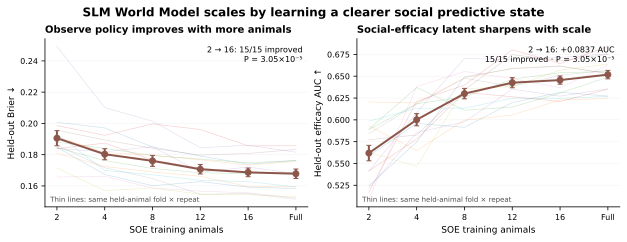
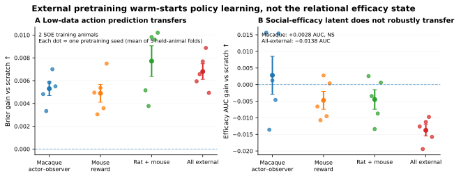
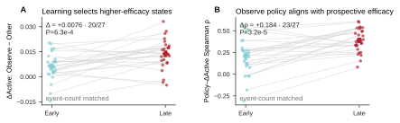
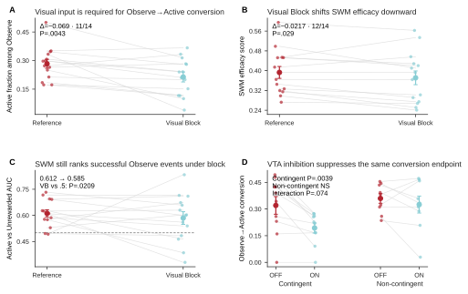
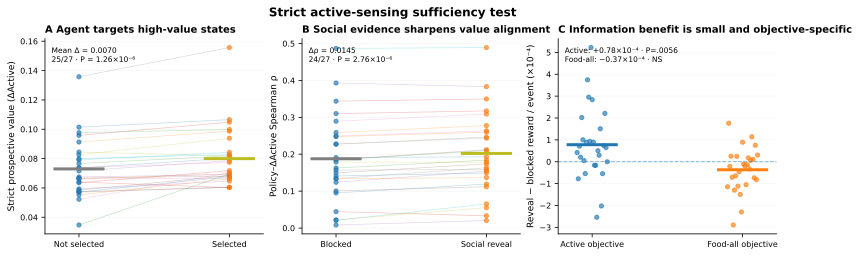

SAME REAL PRESENT
SOCIAL WORLD MODEL / GOAL-DIRECTED SOCIAL SAMPLING / VIRTUAL MOUSE
Social World Model (SWM) of goal-directed social sampling
A data-driven predictive model links real social state, sampling choices, future outcomes, and behavioral dynamics. The Virtual Mouse atlas below provides exact replay of the real events used to interrogate the model.
Social orient—
Social observation P—
Social distance—
Head directions OBS / DEM—
Hero example: latest Module 1.4 Virtual Mouse paired with exact frozen-v85 behavioral-space coordinates.
Explore the motifs
The behavioral space is organized into 12 motifs. Use Social orient 1/2/4/7 to see the established motif structure independent of model threshold, then switch to Observation model probability to see the conservative frame-wise v5 confidence layer. Each clickable run reports Social orient, Social observation probability, nose-to-nose Social distance, and the OBS / DEM head directions, while retaining the stricter validated observation-bout label separately. Click any run to play the exact Virtual Mouse segment, click empty space to place the comparison circle, drag to pan, and scroll or pinch to zoom.
HELD-OUT BEST-CASE VISUALIZATION · ANM4 D139
Social World Model (SWM)
This held-out example compares the recorded future directly with saved model rollouts from the same real present. Each step and probability below comes from the real session/model outputs; no illustrative trajectory is drawn. The population benchmark remains available below.
A SWM learns a predictive relational state
P(Observe)
P(outcome)
P(next motif)
ztlatent social state
at + ot→
zt+1predicted state
at+1 + ot+1→
zt+2predicted state
Observed xtself state · demonstrator state · recent action/outcome history
→
Encoder + GRUposterior state from real sequence
→
The 5-event view is factorized from policy + outcome heads. The 12-motif state is a future target, not an encoder input.
B Same present, different social information
Same recorded presentANM4 D139 · held-out animal
NORMAL
All observed social channels
frozen posterior → imagined future
SOCIAL CONTROL
Matched wrong social trajectory / no-social retrain
train-distribution control · same held-animal evaluation
6 / 8SWM top-1 motif steps
0 / 8Markov top-1 motif steps
0.620 → 0.561 / 0.572efficacy AUC · replacement / no-social retrain
Global benchmark across 27 held-out animals
The hero above is deliberately the clearest example; these population-level results establish that the advantage is not restricted to that event.
Scaling & prospective Observe value
IN-DOMAIN SCALING
0.562 → 0.646
Held-out social-efficacy AUC from 2 → 16 SOE training animals. All 15 matched fold × repeat comparisons improved (P=3.05×10−5).
5-SEED LOW-DATA TRANSFER
5 / 5 seeds
With only 2 SOE training animals, macaque pretraining improves Brier by +0.00530; 5/5 seed means and 5/5 held-animal fold means improve (clustered P=.031 each). Rat+mouse gives +0.00771 and all-external +0.00680. By 8 animals, these gains are ~0.
PROSPECTIVE OBSERVE VALUE
AUC 0.620
At the same latent state zt, ΔActive = P(Active|Observe) − P(Active|Other) predicts whether an actual Observe becomes Active rather than Unrewarded (27/27 above chance).
Scaling separates two kinds of learned state.
External sequence experience can warm-start low-data Observe/action dynamics, but the SOE social-efficacy representation does not transfer generically. In-domain animals progressively sharpen that efficacy state, whereas broad external pretraining can even weaken it.



SWM ↔ SLM computational bridge

Interpretation: SWM independently recovers decision-relevant SLM-like coordinates, and that subspace contributes selectively to Observe policy, while the full SWM retains additional predictive dynamics not captured by the SLM coordinates alone.
Model-family comparison · 27 held-out animals


Multi-step predictive horizon

LEARNING DEPENDENCE · 27 HELD-OUT LEARNERS
Learning aligns Observe policy with prospective social efficacy
For the same learned state zt, define prospective Observe value as ΔActive = P(Active | zt, Observe) − P(Active | zt, Other). Across training, animals increasingly Observe in states where the model predicts that social sampling will improve the chance of an effective Active outcome.
PROSPECTIVE VALUE SELECTION
0.006 → 0.014
Mean ΔActive contrast on actual Observe vs non-Observe states. Late − early = +0.00757; 20/27 increase; P=5.66×10−4.
POLICY–VALUE ALIGNMENT
ρ 0.205 → 0.388
Within-animal correlation between model P(Observe) and ΔActive. 23/27 increase; Δρ=+0.183; P=3.64×10−5.
OBSERVE EFFICACY
AUC 0.620
ΔActive predicts whether an actual Observe becomes Active rather than Unrewarded (AUC 0.620). It adds +0.088 AUC over distance + demonstrator feeding and +0.021 even over all 13 current social cues (P=2.68×10−4).
SOCIAL DEPENDENCE
0.620 → 0.561 / 0.572
Day- and duration-matched wrong social trajectories reduce efficacy AUC to 0.561 (26/27, P=1.49×10−8); a separately retrained no-social SWM gives 0.572 (26/27, P=2.29×10−6).


SUPPORTED INTERPRETATION
Social observations carry substantial information about the evolving world state, but animals do not simply Observe where that information gain is largest. Learning increasingly recruits social sampling when the model predicts that it will improve future feeding efficacy.
IMPORTANT BOUNDARY
This supports goal-directed social information sampling, not a generic uncertainty-seeking rule. ΔActive is a same-state counterfactual inside the learned predictive model, not a randomized causal effect of forcing Observe.
Event-count and Observe/Other matching preserve the learner early→late increase in policy–value alignment, so the effect is not caused by more late-stage samples. However, 13 non-learners show a similar increase; the Group×Stage contrast is not significant. Therefore alignment is treated as a training/experience-dependent computation rather than a learner-specific phenotype.
The strict v2 agent provides only limited sufficiency for active sensing: under an Active-specific objective, revealing social evidence increases reward by only +7.8×10−5 per event (19/27 animals, P=.0056) while increasing policy–value alignment in 24/27 animals. The effect is absent for a food-all objective. This supports objective-specific social information use, not a strong generic active-sensing claim.
Biological closure · visual input and VTA converge on Observe→Active conversion

Boundary: Visual Block reduces both conversion and SWM efficacy at the group level, but their animal-by-animal changes are not correlated (ρ=.218, P=.45). The data therefore support convergence on a common behavioral computation, not individual-level mediation by the SWM score.
Visual Block cue control · does SWM add beyond what is immediately visible?

Interpretation: under Visual Block, SWM retains information that is not reducible to the most obvious current cues. The present sample does not establish a statistically independent increment beyond the full 13-cue current-state model; that stronger claim is therefore not made.
Supporting agent sufficiency test
This test asks a narrower question than the animal analysis: if an agent can only access social evidence after choosing Observe, is the learned prospective value sufficient to train selective social sampling?

Supporting descriptive transition results
Only the two transition effects needed to anchor the behavioral phenotype are retained here. The full 5×5 transition heatmaps remain in source analysis, because they add description but not a stronger mechanistic explanation.

Click any dot to play · click/drag the circle to compare · drag elsewhere to pan · scroll/pinch to zoom
Selected examples
Click a point
Motif dictionary
Each motif is defined in the frozen v85 behavioral atlas. Social Observation statistics use the frame-wise model inference/probability; the stricter merged label is retained separately for validating representative video bouts.